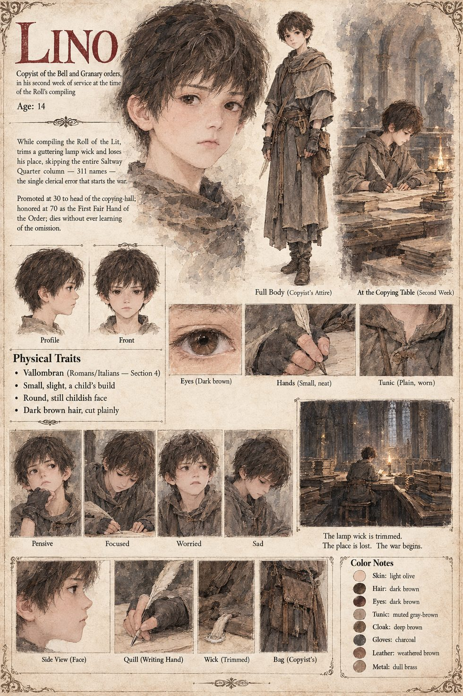

Lino
Copyist of the Bell and Granary orders · 14 years old, in his second week of service
A copyist of fourteen with a small, neat, unhurried hand and an unusual gift for staying on the line, placed by an uncle of the Bell order who wished, in the winter of the ash, to see one member of the family securely employed near a fire. He sits at the far end of the long table, nearest the failing lamp, with a wick cut from the hem of somebody's shirt, while forty copyists compile the Roll of the Lit in the dark.
At the ninth hour of the night he comes to the Saltway Quarter: three hundred and eleven names in a single close-written column, the fourth of the ninth parish book. The wick gutters. He trims it, loses his place for the length of time it takes a small flame to steady, finds it again at the head of the next column and copies on, and it does not occur to him, then or for sixty years, that a page ought to have been longer. He is promoted in his thirtieth year to the head of the copying-hall and honored in his seventieth as the First Fair Hand of the Order, whose flawless Roll is the model of all faithful record. He is never told. Marcello writes in the Examiners' Book on the day of the investiture: Fair copy. Wrong. Honored.